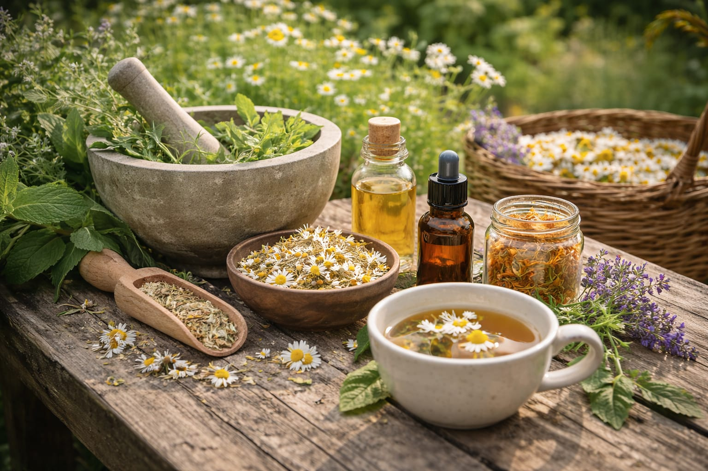

Bimët mjekësore në familje.
Hyrja
Bimët mjekësore kanë qenë pjesë e jetës së njeriut për mijëra vite. Ato janë përdorur nga kultura të ndryshme për trajtimin dhe parandalimin e sëmundjeve në mënyrë natyrale. Sot, studimi i bimëve mjekësore vazhdon të jetë i rëndësishëm, pasi shumë prej tyre përmbajnë substanca aktive me vlerë për mjekësinë moderne.
Bimët mjekësore kanë pasur një rol të rëndësishëm në shëndetin e njeriut në kultura dhe periudha të ndryshme historike. Ato përmbajnë përbërës bioaktivë që mund të mbështesin sistemin imunitar, tretjen, relaksimin dhe mirëqenien e përgjithshme. Sot, studiuesit analizojnë përbërjen kimike të tyre për të kuptuar më mirë potencialin në mjekësinë moderne. Studimi i bimëve mjekësore lidh traditën natyrore me inovacionin shkencor.
